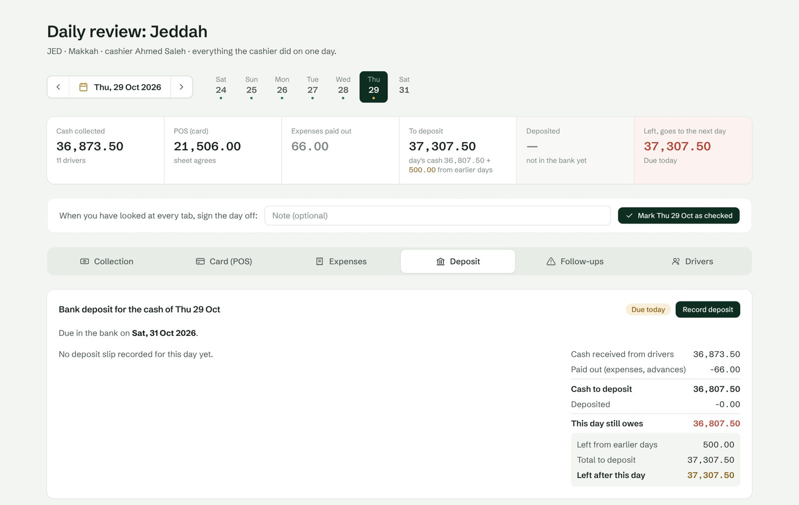
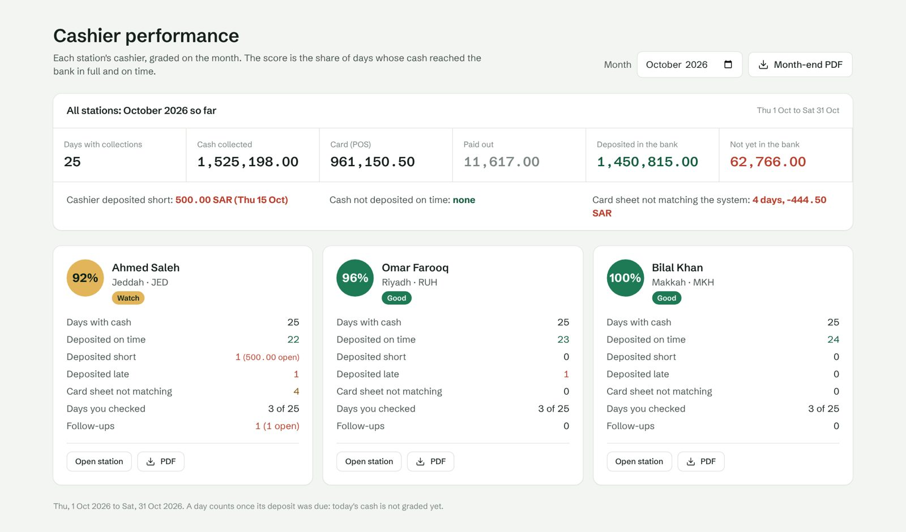
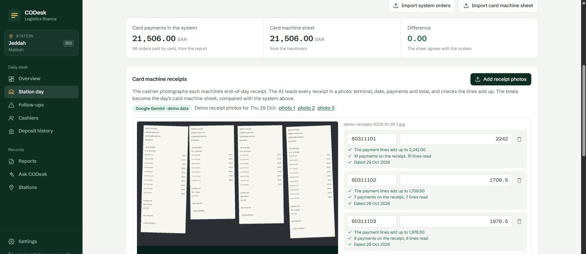

Web appAI
CODesk
A cash desk for a cashier supervisor who looks after many stations. Every morning it shows which station's cash is short or late, so the supervisor knows who to call before opening a single spreadsheet.
The problem
- Cash, card payments, expenses and bank slips sit in different files and emails
- A short deposit is easy to miss and gets forgotten the next day
- Checking 25 stations by hand takes most of the morning
What it does
- One screen per station and day, then a sign-off when it's checked
- Short deposits carry forward to the next day until they're paid
- Compares the card machine total with the system total
- AI reads photos of bank slips and card machine receipts (demo data only)
- Cashier scorecard, follow-ups, daily and month-end PDF reports
Python · FastAPI · SQLite · React · TypeScript · Tailwind · Google Gemini · 150+ automated tests


